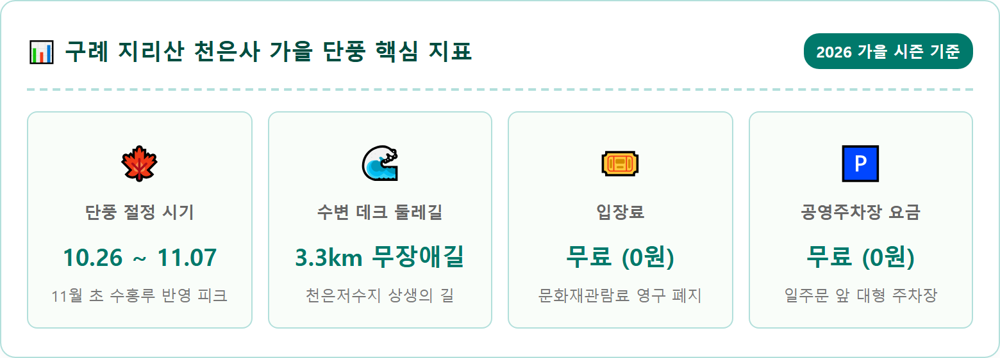
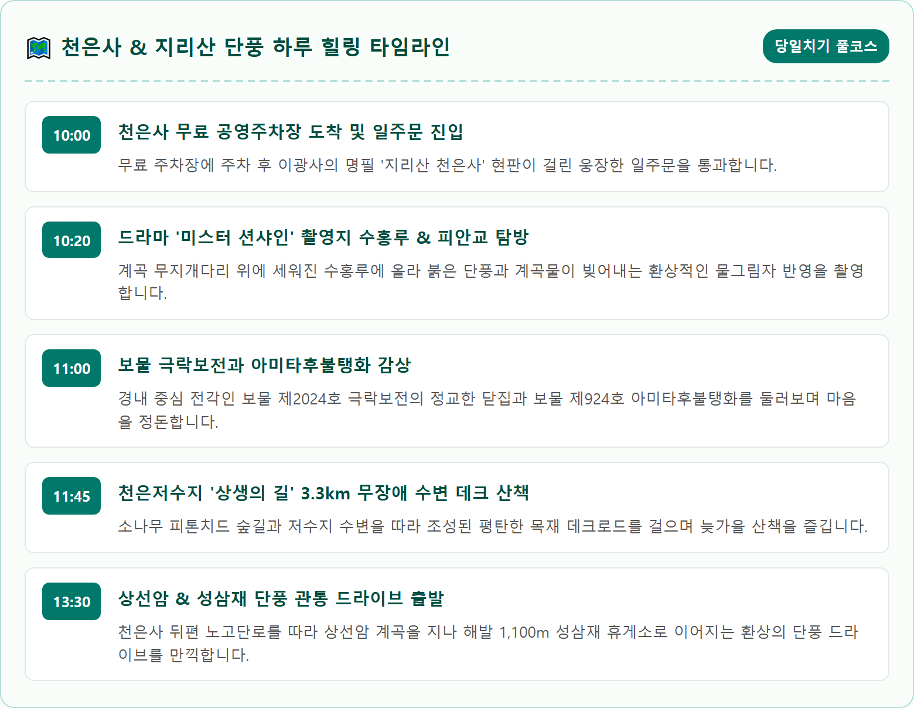
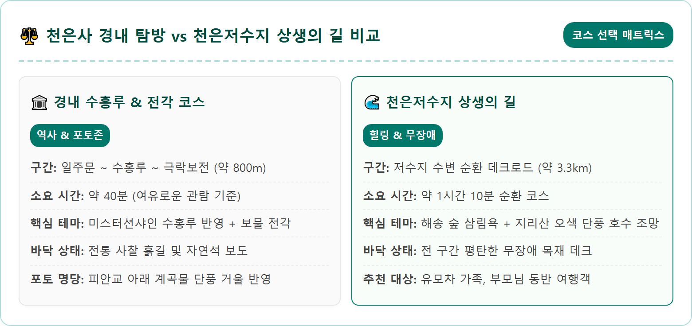
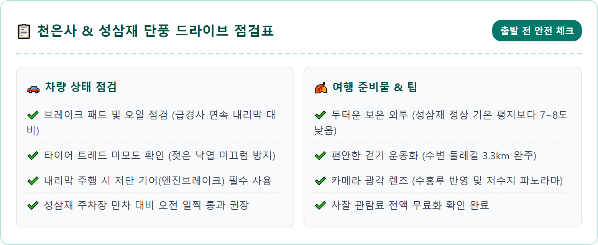
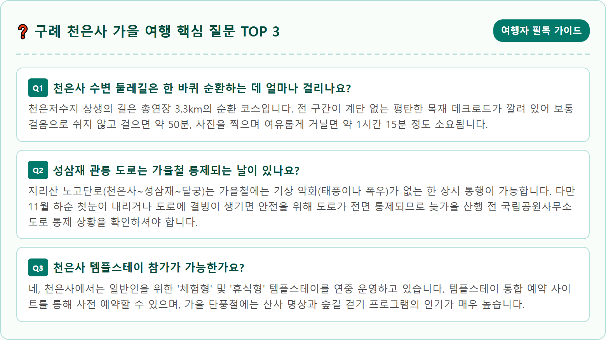

Cinematic eye-level photograph of Suhongru Pavilion arched stone bridge at Cheoneunsa Temple in Jirisan Mountain in autumn, South Korea. Traditional Korean wooden pavilion built over a crystal-clear mountain stream, surrounded by radiant crimson red and amber maple trees. Perfect water reflection of the pavilion and vibrant autumn foliage on the placid stream pool below. Gentle morning light filtering through autumn leaves, photorealistic, ultra-high resolution, 8k, tranquil traditional oriental autumn ambiance, fine organic textures, 1:1 aspect ratio.




